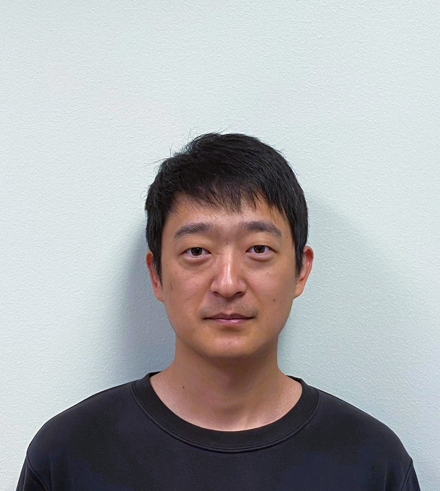

Postdoctoral Researcher, Petroleum Engineering
Texas A&M University
Email: huangtj@tamu.edu
CV: Download
I am a Postdoctoral Researcher at Texas A&M University working on subsurface energy systems, reactive transport, and computational geomechanics. My research combines high-fidelity numerical modeling with high-performance scientific computing to study coupled thermal-hydraulic-mechanical-chemical processes in geologic media. A central theme of my work is extending the TOUGH family of simulators so that fundamental model development translates into tools that can be used for underground hydrogen storage, carbon storage, geothermal energy, natural gas hydrates, and nuclear waste disposal.